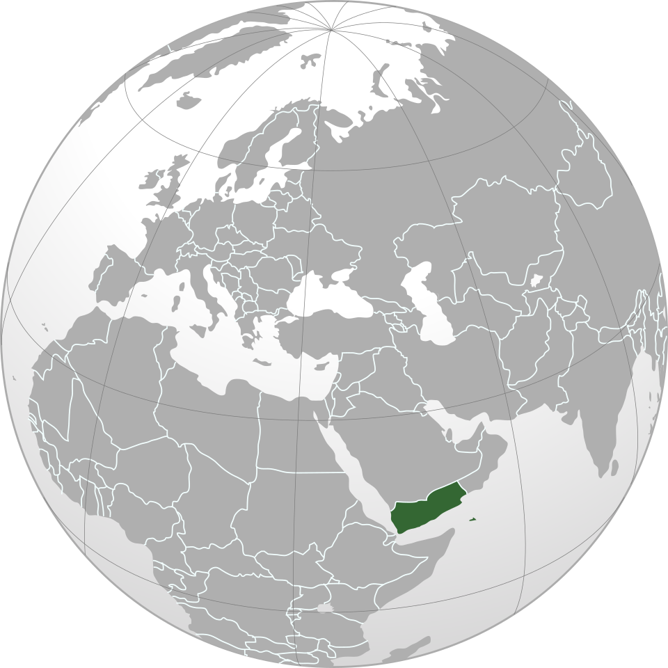

🏛️ Cultura
A cultura iemenita possui raízes muito antigas e combina tradições árabes, islâmicas e costumes regionais. A arquitetura das cidades históricas é uma das características mais marcantes do país.

O Iémen é um país localizado no extremo sul da Península Arábica, no Oriente Médio. Possui uma história milenar, antigas cidades, construções tradicionais e uma rica diversidade cultural.
A cultura iemenita possui raízes muito antigas e combina tradições árabes, islâmicas e costumes regionais. A arquitetura das cidades históricas é uma das características mais marcantes do país.
A culinária do Iémen utiliza carnes, arroz, pães, legumes e diversas especiarias. Entre os pratos tradicionais estão:
A ilha de Socotra, pertencente ao Iémen, é famosa por sua biodiversidade única. Muitas de suas plantas e espécies são encontradas apenas nessa região do planeta.